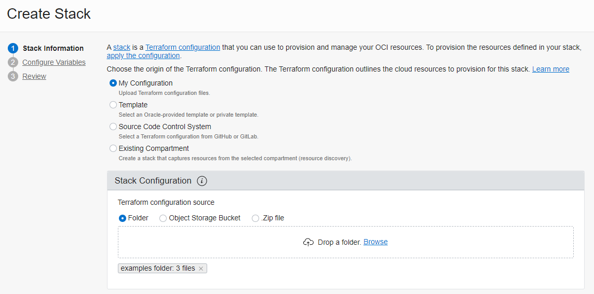
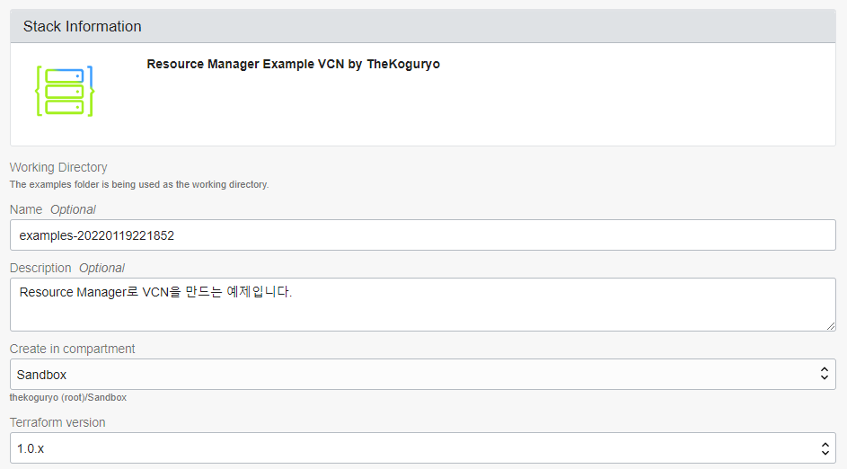
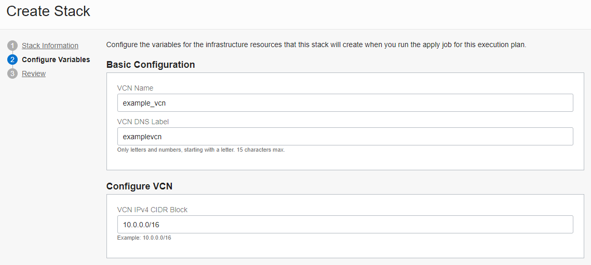
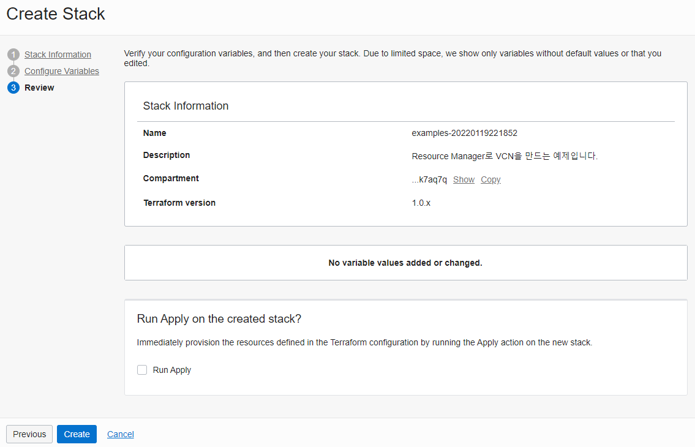
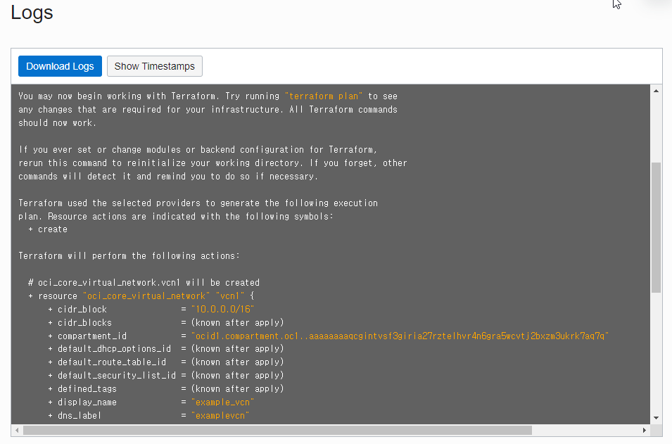
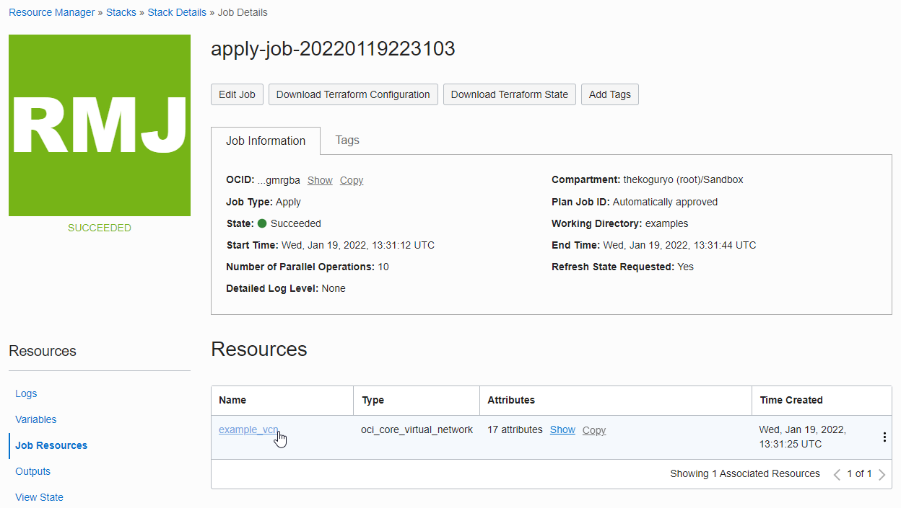
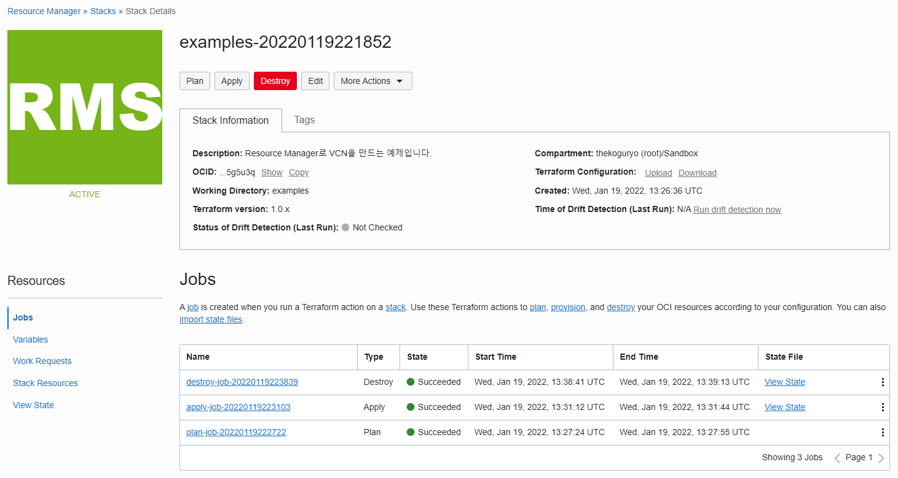

Warning
This content has been generated by machine translation. The translations are automated and have not undergone human review or validation.
15.1 Using Resource Manager
Resource Manager is a service that registers and runs Terraform Configuration as a function to automate OCI resource provisioning. Instead of installing Terraform on the client, you can register Terraform Configuration files in Resource Manager and run it with the OCI console or OCI CLI.
The difference is that the Terraform CLI does not need to be installed separately, and the Terraform execution state is managed by the Resource Manager.
-
Stack
A stack is a provisioning unit that is created by registering a Terraform Configuration bundle.
-
Job
A job is an execution job of Terraform Configuration registered as a stack, and Terraform Plan, Apply, and Destroy are executed as experienced in Terraform.
Using Resource Manager
-
Create Terraform Configuration Let’s use the VCN creation configuration file used in 14.2.2 Creating Terraform Configurations as it is. The difference is that only region is a required field in the oci provider, and the rest are not required. The rest of the fields are not required because it runs in the Tenancy of the registered Resource Manager and is executed by an authenticated user.
-
provider.tf
variable "region" {} provider "oci" { region = "${var.region}" } -
vcn.tf
variable "compartment_ocid" {} resource "oci_core_virtual_network" "vcn1" { cidr_block = "10.0.0.0/16" dns_label = "vcn1" compartment_id = "${var.compartment_ocid}" display_name = "vcn1" } output "vcn1_ocid" { value = ["${oci_core_virtual_network.vcn1.id}"] }
- The following variables are automatically calculated through OCI console information.
- tenancy_ocid
- compartment_ocid
- region
- current_user_ocid
- https://docs.oracle.com/en-us/iaas/Content/ResourceManager/Concepts/terraformconfigresourcemanager.htm#configvar
-
-
Changing Terraform Configuration for Resource Manager
-
UI exists because OCI Console uses Resource Manager. Provides an extensible schema for Terraform settings to be set in the UI.
-
provider.tf
variable "region" {} provider "oci" { region = "${var.region}" } -
Changes to vcn.tf
variable "compartment_ocid" {} variable "vcn_name" {} variable "vcn_dns_label" {} variable "vcn_cidr_block" {} resource "oci_core_virtual_network" "vcn1" { cidr_block = var.vcn_cidr_block dns_label = var.vcn_dns_label compartment_id = var.compartment_ocid display_name = var.vcn_name } output "vcn1_ocid" { value = ["${oci_core_virtual_network.vcn1.id}"] }
-
schema.yaml
You can add stack commentary, variable title, commentary, variable UI array syntax, etc. as follows.
title: "Resource Manager Example VCN by TheKoguryo" description: "Create a VCN by Resource Manager" schemaVersion: 1.0.0 version: "20220119" locale: "en" groupings: - title: "Basic Hidden" visible: false variables: - compartment_ocid - tenancy_ocid - region - title: "Basic Configuration" variables: - vcn_name - vcn_dns_label - title: "Configure VCN" variables: - vcn_cidr_block variables: vcn_name: type: string title: VCN Name required: true default: example_vcn vcn_dns_label: type: string title: VCN DNS Label description: "Only letters and numbers, starting with a letter. 15 characters max." required: true default: examplevcn vcn_cidr_block: type: list(string) title: VCN IPv4 CIDR Block description: "Example: 10.0.0.0/16" required: true default: ["10.0.0.0/16"]
-
-
In the OCI console, click Developer Services > Resource Manager > Stacks in the navigation menu.
-
Click Create Stack.
-
Stack creation settings
-
Drag and drop the folder where the first file created by My Configuration is located to Drop a folder.

-
The setting is loaded and the basic description of the Stack is shown as below.

-
Goes to the next page.
-
-
Enter variable values
Based on the created schema.yaml, it is expressed as shown in the figure.

-
Change the value and create a Stack after review.

-
Click the Plan button like the terraform plan command.
-
The same result as when performing terraform plan in Terraform CLI is confirmed in the log.

-
Go back to the stack detail screen and click Apply to run it.
-
If the creation is successful, you can check the resource created as a result in Resources > Job Resources.

-
Follow the link and you will see the actual VCN has been created.
-
Go back to the Stack details and click the Destroy button.
-
When the execution is finished and you move to the VCN list screen, you can see that the example_vcn created earlier has been deleted.
-
You can view the results of all operations of the Stack so far, such as Plan, Apply, and Destroy, on the Stack detail screen.

As an individual, this article was written with my personal time. There may be errors in the content of the article, and the opinions in the article are personal opinions.